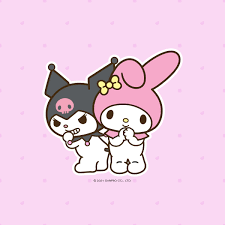

Minha parceira, conselheira, e amiga mais leal,
O tempo em seu perdão me diz que tudo é igual.
Se houve um deslize, um tropeço no caminho,
Sei que a estrada é nossa, e sigo o seu carinho.
Não mais a sombra, mas a luz que você me deu,
A reconciliação completa que em seu peito nasceu.
Obrigado por ser o farol que me faz recordar
Que o laço da nossa amizade não há como quebrar.
Sua força não é de ferro, mas de um coração que encanta,
Você é única, a canção que a vida não canta.
Lá no vale escuro, onde o medo parecia reinar,
Você foi a flauta mágica que me ensinou a sonhar.
É a quietude da floresta que só o Totoro traz,
A gigante e gentil presença que me devolve a paz.
Nosso afeto é como a lealdade de Jiji por Kiki,
Um companheirismo leve que ignora qualquer bico.
Pois é ao seu lado que eu encontro, sem buscar,
A bússola para o futuro, o porto para ancorar.
Em você vejo a coragem serena da jovem Chihiro,
Que não esquece quem é, mesmo no mais febril suspiro.
É a esperança que floresce, como os jardins de Laputa,
Um tesouro guardado em cada longa e doce disputa.
Minha admiração é imensa, o amor de irmão que me guia,
Pela pessoa forte e única que você é todo dia.
E o meu afeto por ti, que sempre te envolve e te chama,
É o abraço de Haku que redescobre a chama.
Que a força do nosso sempre apague qualquer vestígio,
Deixe o tempo fluir, e firme o nosso prestígio.
Você é a voz que acalma, a chama que não se apaga,
A amizade de uma vida, a história que não se indaga.
Obrigado por tudo, por ser quem você é e sempre foi,
Meu carinho é eterno, um amor que não é temporário, hoje e depois.
— Seu Pochacco, Nícolas.
Feito com Carinho por Nícolas - Seu bobão
Espero que goste eu me enpenhei no poema...
De seu AMIGO, para minha AMIGA :>
"Tenha certeza que esse não vai ser o único aniversario seu que estarei contigo, demais, existe demais pra frente
que estaremos juntos."
🌸🍄 CARTA MÁGICA DO SEU TOTORO (Clique para abrir bobona)

Toda princesa merece um príncipe... mas você merece o universo inteiro.